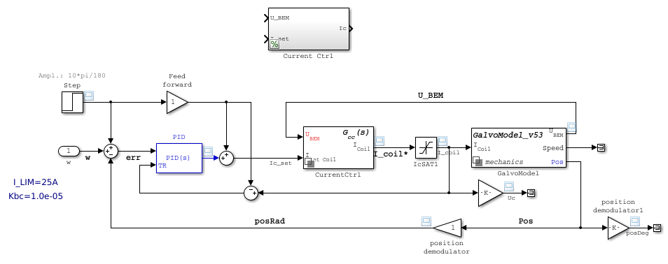
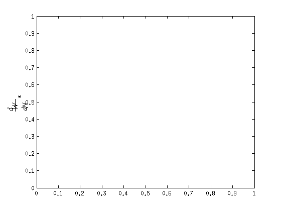
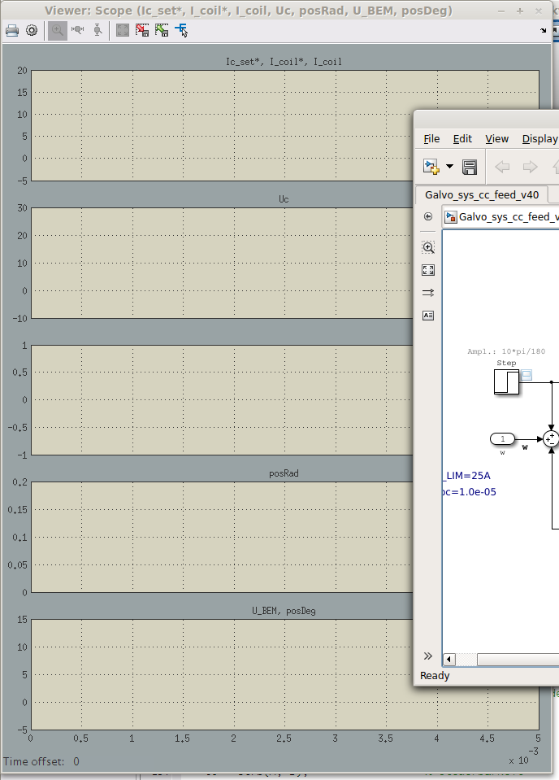
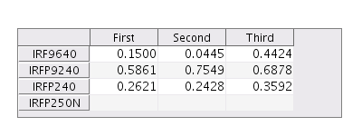
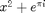

Contents
- -Simulink parameter
- -Keine Torsionsfeder mehr im modell
- -Andere modellparameter- bezeichnungen
- %%%%%%%%%%%%%%%%%%%%%%%%%%%%%%%%%%%%%%%%%%%%%%%%%%%%%%%%%%%%%%%%
- %%%%%%%%%%%%%%%%%%%%%%%%%%%%%%%%%%%%%%%%%%%%%%%%%%%%%%%%%%%%%%%%
- Search for blocks with userdata
- kleiner workaround wegen Simulink SegFault %%%
- bei geöffneten Cope- views %%%
- kleiner workaround wegen Simulink SegFault %%%
- bei geöffneten Cope- views %%%
%%%%%%%%%%%%%%%%%%%%%%%%%%%%%%%%%%%%%%%%%%%%%%%%%%%%%%%%%%%%%%%%%%%%%%%
-Simulink parameter
-Keine Torsionsfeder mehr im modell
-Andere modellparameter- bezeichnungen
%%%%%%%%%%%%%%%%%%%%%%%%%%%%%%%%%%%%%%%%%%%%%%%%%%%%%%%%%%%%%%%%%%%%%%%
%set(0,'DefaultFigureRenderer','OpenGL') %set(0,'DefaultFigureRendererMode', 'manual') delete(findall(0,'type','line')); %SIMFILES={ 'Galvo_sys_v20',... % 'GalvoModel_v43'}; SIMFILES={ 'Galvo_sys_cc_feed_v40',... 'CurrentComp_v20',... 'GalvoModel_v53'}; % ********************************************************************* % Init block models % ********************************************************************* param = loadGalvoParam(4); paramCtrl = loadCtrlParam(4); evalGalvoParam %init = 0; %SEARCH = {'Kp_cc'}; %VAL = 1; %Kp_cc = 1; load_system(SIMFILES); %set_param( [SIMFILES{1} '/GalvoModel'],... % 'OverrideUsingVariant',SIMFILES{2}); set_param(SIMFILES{1}, 'AbsTol', '1e-5','MaxStep','1e-4'); %set_param(SIMFILES{2}, 'AbsTol', '1e-5','MaxStep','1e-4'); %set_param(SIMFILES{3}, 'AbsTol', '1e-5','MaxStep','1e-4'); %set_param(SIMFILES{2}, 'AbsTol', 'auto'); %sim(SIMFILES{1}); open_system(SIMFILES{1});  
******************************************************************* table spice models *******************************************************************
MOD = { 'IRF9640 VDMOS(pchan Rg=3 Vto=-3.5 Rd=.15 Rs=.15 Rb=.15 Kp=8 lambda=.01 mtriode=.5 Cgdmax=1.5n Cgdmin=.07n Cgs=1n Cjo=1n Is=38p mfg=International_Rectifier Vds=-200 Ron=.5 Qg=44n)',...
'IRFP9240 VDMOS(pchan Rg=3 Vto=-4 Rd=200m Rs=50m Rb=100m Kp=8.2 Lambda=.10 Cgdmax=1.8n Cgdmin=.07n Cgs=.77n Cjo=.77n Is=76p mfg=International_Rectifier Vds=-200 Ron=500m Qg=44n)',...
'IRFP240 VDMOS(Rg=3 Vto=4 Rd=72m Rs=18m Rb=36m Kp=4.9 Lambda=.03 Cgdmax=1.34n Cgdmin=.1n Cgs=1.25n Cjo=1.25n Is=67p mfg=International_Rectifier Vds=200 Ron=180m Qg=70n)',...
'IRFP250N VDMOS(Rg=1.44 Vto=4.0 Rd=47m Rs=0m Rb=5.6m Kp=13 Cgdmax=3.9n Cgdmin=0.10n Cgs=1.9n Cjo=1.25n Is=5p tt=186n mfg=International_Rectifier Vds=200 Ron=75m Qg=123n)'};
MOD1=MOD;
for k=1:4
MOD{k}=strrep(MOD{k},'(',' ');
MOD{k}=strrep(MOD{k},')',' ');
MOD{k}=strsplit(MOD{k},' ');
TYPE{k}=MOD{k}(1:3);
MOD{k}(1:3)=[];
end
type=TYPE{1}
mod=MOD{1}
for k=1:length(MOD)
% NAMES{k} =
end
f = figure('Position',[200 200 400 150]);
dat = rand(3);
rnames = cellfun(@(x) x{1}, TYPE, 'UniformOutput', false);
cnames = {'First','Second','Third'};
t = uitable('Parent',f,'Data',dat,'ColumnName',cnames,...
'RowName',rnames,'Position',[20 20 360 100]);
% % return
% clear m1
% for k=1:4
% m1{k}=sort(strsplit(MOD{k},' ')');
% end
% m1{1}
%
% str=[];
% for k=1:min(cellfun(@length, m1))
% str=[str sprintf('%s\t\t%s\t\t%s\t\t%s\t\t\n',...
% m1{1}{k},m1{2}{k},m1{3}{k},m1{4}{k})];
% end
% sprintf('%s',str)
type =
'IRF9640' 'VDMOS' 'pchan'
mod =
Columns 1 through 6
'Rg=3' 'Vto=-3.5' 'Rd=.15' 'Rs=.15' 'Rb=.15' 'Kp=8'
Columns 7 through 11
'lambda=.01' 'mtriode=.5' 'Cgdmax=1.5n' 'Cgdmin=.07n' 'Cgs=1n'
Columns 12 through 17
'Cjo=1n' 'Is=38p' [1x27 char] 'Vds=-200' 'Ron=.5' 'Qg=44n'
Column 18
''
 ******************************************************************* Update simulink configs struct *******************************************************************
clear open_bd ind del open_bd = find_system('type', 'block_diagram'); ind = [1:length(open_bd)]; del{1} = find(~cellfun(@isempty, strfind(lower(open_bd),'simulink'))); del{2} = find(~cellfun(@isempty, strfind(lower(open_bd),'simviewers'))); del{3} = find(~cellfun(@isempty, strfind(lower(open_bd),'eml_lib'))); if length(find(cellfun(@isempty, del))) > 0 ind(del{~cellfun(@isempty,del)}) = []; end % % if exist('simulinkConfigSets','var') % save('simulinkConfigSetsBACK','-struct',... % simulinkConfigSets.Galvo_sys_cc_neu_v32.); % clear savesimulinkConfigSets; % end clear simulinkConfigSets; for k=1:length(open_bd(ind)) tmp1 = getActiveConfigSet(SIMFILES{k}) simulinkConfigSets.(SIMFILES{k}) = tmp1; end simulinkConfigSets
Matrix index is out of range for deletion.
Error in GalvoModel_v4_sys (line 93)
ind(del{~cellfun(@isempty,del)}) = [];
%%%%%%%%%%%%%%%%%%%%%%%%%%%%%%%%%%%%%%%%%%%%%%%%%%%%%%%%%%%%%%%%
state space model Polplatzierung für ein Servosystem
%%%%%%%%%%%%%%%%%%%%%%%%%%%%%%%%%%%%%%%%%%%%%%%%%%%%%%%%%%%%%%%%%%% % Matlab & Tools, (U. Brunner / J. Hoffmann) Ab S.335 %------------------------------------------------------------------ SSLIMOD={ 'GalvoModel_v43',... 'Galvo_sys_SS_v1'}; if ~exist('Gsys','var') load('GalvoLinmods.m','-mat','Gsys'); disp('Gsys loaded from m- file'); end %------------------------------------------------------------------ % ss Matritzen bilden für simulink modell %------------------------------------------------------------------ % Für das Platzieren der gewünschten Pole benötigt der Zustandsregler % alle im state space vorhanden Zustandsgrößen, also den Zustands- % Vektor x(t). % Dieser wird über eine Rückführungsmatrix K an den Eingang des % ss- Modells zurück gekoppel. % % dx(t) = A.x(t) + B.u(t) % Standard ss modell % u(t) = -K.x(t) % Rückführung % ==> % dx(t) = (A - B.K).x(t) % Homogenes DGL- System 1. Ordnung % % Die Pole (oder Wurzeln der charakteristischen Gleichung) können % durch die Matrix K beliebig platziert werden, % WENN die Eingangsmatrix B und die Systemmatrix A bestimmte % Bedingungen erfüllen... % % ... wie gut ein System beobachtbar bzw. steuerbar ist, wird über % die Controllability- und Observability- Matritzen bewertet. % % ------------------------------------------ % Steuerbarkeit - Beobachtbarkeit % Controllability - Observability % ------------------------------------------ % % Die Steuerbarkeit im Sinne der Polplatzierung verlangt, dass die % Controllabilitymatrix Co den RANG n in höhe der Systemordnung hat. % % Die Beobachtbarkeitsmatrix beschreibt, wie gut sich die n- % Zustandsgrößen des Systems aus der Ausgangsgröße rekonstruieren % lassen... ( Beobachter ) % % Co = [B, A.B, A^2.B, ...A^(n-1).B] < rank( Co ) =!= n_sys > % Co = ctrb(A, B) % % Ob = [C, C.A, C.A^2, ...C.A^(n-1)] % Ob = obsv(A, B) % % Die Rückführungsmatrix K kann bei bekannten Wunschpolen mit den % Matlab funktionen % % K = place(A, B, p); oder K = acker(A, B, p); % %%%%%%%%%%%%%%%%%%%%%%%%%%%%%%%%%%%%%%%%%%%%%%%%%%%%%%%%%%%%%%%%%%% %

CL = @(x,n) repmat(x, 1, n); cl = CL('-',60); [A, B, C, D] = ssdata(Gsys{1}(4)); % SISO ss Model Gsys{end+1,1} = ss(A, B, C, D); Gsys{end,1}.InputName = Gsys{1,1}.InputName; Gsys{end,1}.OutputName = Gsys{1,1}(4).OutputName; Co = ctrb(A, B); % Steuerbarkeit Co2 = [B, A*B, A^2*B]; disp(sprintf('%s\nRang von Co:\trank(Co) = %i', cl, rank(Co))) disp(sprintf('Rang von Co2:\trank(Co2) = %i', rank(Co2))) disp(sprintf('%s\n\nBeobachtbarkeitsmatrix Ob = obsv(A,B '' )\n',cl)) Ob = obsv(A, B'); disp(Ob) disp(cl) disp(sprintf('\n%s\n%s\n\tSteht so im Buch, müsste aber Ausgangsmatrix sein\n%s\n%s',... CL('*', 60), CL('*', 60), CL('*', 60), CL('*', 60))) disp(sprintf('\n\nBeobachtbarkeitsmatrix Ob = obsv(A,C)\n')) Ob = obsv(A, C); disp(Ob) disp(cl) %save('GalvoLinmods.m', 'Gsys','-append');
%%%%%%%%%%%%%%%%%%%%%%%%%%%%%%%%%%%%%%%%%%%%%%%%%%%%%%%%%%%%%%%%
NUR LINMOD
%%%%%%%%%%%%%%%%%%%%%%%%%%%%%%%%%%%%%%%%%%%%%%%%%%%%%%%%%%%%%%%%%%% %set_param( [SIMFILES{1} '/CopeMain'],'open','off'); %LIMOD={'Galvo_CC_linmod_v30'}; ds='---------------------------------------------------'; LIMOD={ 'Galvo_sys_cc_detailed_pwr_v40',... 'CurrentComp_v20_shunt_fb',... 'CurrentComp_v20',... 'GalvoModel_v53',... 'GalvoModel_v43'}; %%%%%%%%%%%%%%%%%%%%%%%%%%%%%%%%%%%%%%%%%%%%%%%%%%%%%%%%%%%%%%%%%%% clear Gsys; for selSys=5 open_system(LIMOD{selSys}); set_param(LIMOD{selSys}, 'MaxStep', '1e-6'); clear S; S = linmod(LIMOD{selSys}); S.filename = LIMOD{selSys}; u_ = strrep(S.InputName, [S.filename '/'], ''); y_ = strrep(S.OutputName, [S.filename '/'], ''); S.InputName = u_; S.OutputName = y_; %GvCCa = ss(S.a, S.b, S.c, S.d, 'u', u_, 'y', y_); % Kompletter Regelkreis statespace = ss(S.a, S.b, S.c, S.d, 'u', u_, 'y', y_); % Kompletter Regelkreis if ((length(S.InputName) > 1) && (length(S.OutputName) > 1)) sprintf('%s\n\tMIMO system\n%s',ds,ds) else if length(S.InputName) > 1 sprintf('%s\n\tMISO system\n%s',ds,ds) else sprintf('%s\n\tSIMO system\n%s',ds,ds) end end [num, den] = tfdata(statespace); if exist('Gsys','var') > 0 n = length(Gsys); else n = 1; end Gsys{n,1} = tf(num , den, 'u', u_, 'y', y_) Gsys{n,2} = LIMOD{selSys} end f99=figure(99); delete(findall(f99,'type','line')); leg=[]; length(Gsys(:,1)) for k=1:length(Gsys(:,1)) step(Gsys{k,1}) leg = [leg sprintf('%s:',Gsys{k,2})] hold all; end hold off; legend(strsplit(leg(1:end-1),':')) %end return syms Kp Ki Kd N p pid=Kp+Ki/p+Kd*N/(1+N/p); Kp=1.7;Ki=0.2;Kd=-1.26;N=0.1781; PID=sym2tf(eval(pid)) loop=feedback(PID*GvCCb(2),1); s1=balred(loop,1); kb=1/pole(s1)
------------------------------------------------------------------------ ----- Nochmal in klein ----- Estimate tf of current controller simulated in LTSpice ------------------------------------------------------------------------
RAWS={ 'powerstage_PushPull_FET_lochraster_KOB.raw',...
'powerstage_PushPull_FET_ADA4700_hv.raw',...
'powerstage_PushPull_BJT_MJ1101xG_LT_HvOp_pwrInv.raw'};
RAWS={ 'powerstage_PushPull_FET_lochraster_KOB.raw',...
'powerstage_PushPull_FET_ADA4700_hv-G0-alles.raw',...
'powerstage_PushPull_BJT_MJ1101xG_LT_HvOp_pwrInv-G0-alles.raw',...
'powerstage_PushPull_BJT_MJ1101xG_LT_HvOp_inkl_sum.raw',...
'powerstage_PushPull_BJT_MJ1101xG_LT_HvOp_afterLoopEst.raw'};
indResp = [4];
FILES = RAWS(end);
------------------------------------------------------------------------
cl=clock; timeAndDate=sprintf('Date: %i-%i-%i\tTime: %i:%i:%i', fliplr(cl(1:3)), round(cl(end-2:end))); ds='---------------------------------------------------'; sprintf('%s\n\t Start frequency response - model estimation\n\t\t%s \n%s', ds, timeAndDate, ds) clear G0_fet G0_bjt G0_fetEST G0_bjtEST G0 ; G0 = struct('fet_iw',idtf(1,[1 1]),'fet_uw', idtf(1,[1 1]),... 'bjt_iw',idtf(1,[1 1]),'bjt_uw', idtf(1,[1 1])); G0; if 0 k=1; G0.fet_iw = idSpice( FILES{k}, 'I(RFB)', [0 2e6], [3 1], '0'); sprintf('%s\nFreq response estimation for FET tf I(RFB)/w ready!\nFits: %f %%',... FILES{k}, G0.fet_iw.Report.Fit.FitPercent) G0.fet_uw = idSpice( FILES{k}, 'V(Ucoil)', [0 2e6], [4 3], '0'); sprintf('%s\nFreq response estimation for FET tf V(Icoil)/w ready!\nFits: %f %%',... FILES{k}, G0.fet_uw.Report.Fit.FitPercent) G0.fet_iw.InputName = 'IV(cmd)'; G0.fet_uw.InputName = 'IV(cmd)'; G0.fet_iw.OutputName = 'I(RFB)'; G0.fet_uw.OutputName = 'V(Ucoil)'; k=2; G0.bjt_iw = idSpice( FILES{k}, 'I(RFB)', [0 2e6], [3 1], '0'); sprintf('%s\nFreq response estimation for BJT tf I(RFB)/w ready!\nFits: %f %%',... FILES{k}, G0.bjt_iw.Report.Fit.FitPercent) G0.bjt_uw = idSpice( FILES{k}, 'V(Ucoil)', [0 2e6], [4 3], '0'); sprintf('%s\nFreq response estimation for BJT tf V(Icoil)/w ready!\nFits: %f %%',... FILES{k}, G0.bjt_uw.Report.Fit.FitPercent) G0.bjt_iw.InputName = 'IV(cmd)'; G0.bjt_uw.InputName = 'IV(cmd)'; G0.bjt_iw.OutputName = 'I(RFB)'; G0.bjt_uw.OutputName = 'V(Ucoil)'; G0EST = G0; end
------------------------------------------------------------------------ ----- Loop estimation ------------------------------------------------------------------------
k=1; intVect=[1 1000e6]; pv=[[2 0];[2 1];[2 2];[3 0];[3 1];[3 2];[3 3]] ; cl=clock; timeAndDate=sprintf('Date: %i-%i-%i\tTime: %i:%i:%i', fliplr(cl(1:3)), round(cl(end-2:end))); ds='---------------------------------------------------'; disp(sprintf('%s\n\t Start frequency response - model estimation\n\t\t%s \n%s\n', ds, timeAndDate, ds)) for k=1:length(pv(:,1)) disp(sprintf('%s\n%s\npz vector: [%i %i]\t\t(...)',ds , FILES{1}, pv(k,:))) tt1=tic; G0.VoutA{k,1} = idSpice( FILES{1}, 'V(out_A)', intVect,... pv(k,:), '0'); ttSpent = toc(tt1); disp(sprintf('Freq response estimation done!\nFits: *** %.3f%% ***\t\ttime spent: %.2fs',... G0.VoutA{k,1}.Report.Fit.FitPercent, ttSpent)) G0.VoutA{k,2}=sprintf('[%i %i]', pv(k,:)); G0.VoutA{k,3}=sprintf('%.1f %.1e',intVect); G0.VoutA{k,4}=sprintf('%.2f%%',G0.VoutA{k,1}.Report.Fit.FitPercent); G0.VoutA{k,5}=sprintf(FILES{1}); G0.VoutA{:}; end if ~exist('Gl','var') load('estimationLoop.m','-mat','Gl'); disp('Gl loaded'); end Gl{end+1}=G0.VoutA; Ave('estimationLoop.m', 'Gl','-append'); % Find VAR in LTspice import data structure % find(~cellfun(@isempty, (strfind(resp.variable_name_list(1,:), 'V(out_a)')))) % Gl(end-1)=[]
------------------------------------------------------------------------ ----- Compare estimated tf to the numeric raw data ------------------------------------------------------------------------
cpl=Gl{1,end}(3,1);
[num den]=tfdata(cpl{:})
cpl{2}.tf=tf(num, den)
pb=bodeoptions;
pb.FreqUnits='Hz';
pb.XLim=[1 100e6];
pb.YLim{1,1}=[-50 25]; % YLim Mag
pb.YLim{1,2}=[-115 85]; % YLim Phase
%pb.YLim=[-100 25];
pb.Grid='on';
f94=figure(94);
hb=bodeplot(cpl{2}.tf,pb);
title(sprintf( ['Freq response estimation - closed loop V(out_A)/V(Ucmd)\n',...
'powerstage_PushPull_BJT_MJ1101xG_LT_HvOp_inkl_sum.raw']), 'Interpreter','none');
------------------------------------------------------------------------ ----- load numeric raw data ------------------------------------------------------------------------
resp=LTspice2Matlab(FILES{1});
SIGNALS={'V(out_a)','I(out_a)','V(stim)','I(Rshunt)'};
ind=[];
for k=1:length(SIGNALS)
ind{k} = find(~cellfun(@isempty, (strfind(resp.variable_name_list(1,:), SIGNALS{k}))));
end
clrpo=cellfun(@isempty, ind);
ind(clrpo)=[];
SIGNALS(clrpo)=[];
ind = cell2mat(ind);
if isempty(ind)
SIGNALS
error( 'Signals not found' )
else
sig.V = [];
sig.I = [];
for k=1:length(ind)
sig.(SIGNALS{k}(:,1)).(SIGNALS{k}(:,3:end-1)) = resp.variable_mat(ind(k),:);
end
end
sig.t=resp.time_vect;
%p=stepoptions;
fn=fieldnames(sig.V);
sv1=figure(90);
SUB=220;
for k=1:length(fn)
hs(k)=subplot(SUB+k)
plot(sig.t, sig.V.(fn{k}));
end
grid on;
fn=fieldnames(sig.I);
for k=1:length(fn)
hs(k)=subplot(SUB+k)
plot(sig.t, sig.I.(fn{k}));
end
grid on;
legend(fn)
[num den]=tfdata(G0.VoutA) sys1=tf(num, den) syms p param=loadGalvoParam(4) evalGalvoParam glc=(1/(Lc*p)/(1+(Rsh/(p*Lc)))) pretty (glc) glc=sym2tf(glc) pb=bodeoptions; pb.FreqUnits='MHz'; f98=figure(98); bodeplot(sys1); f97=figure(97); bodeplot(glc); p=nyquistoptions; p.ShowFullContour='off'; f96=figure(96); nyquist(sys1,p); f95=figure(95); rlocus(sys1);
[num, den] = tfdata(G0.fet_iw); G0tf.fet_iw = tf(num, den); [num, den] = tfdata(G0.fet_uw); G0tf.fet_uw = tf(num, den);
[num, den] = tfdata(G0.bjt_iw); G0tf.bjt_iw = tf(num, den); [num, den] = tfdata(G0.bjt_uw); G0tf.bjt_uw = tf(num, den);
G0tf = [];
uu = G0.fet_iw.InputName{:};
yy = G0.fet_iw.OutputName{:};
[num, den] = tfdata(G0.fet_iw);
G0tf{1,1} = tf(num, den,'u',uu,'y',yy);
uu = G0.fet_uw.InputName{:};
yy = G0.fet_uw.OutputName{:};
[num, den] = tfdata(G0.fet_uw);
G0tf{1,2} = tf(num, den,'u',uu,'y',yy);
uu = G0.bjt_iw.InputName{:};
yy = G0.bjt_iw.OutputName{:};
[num, den] = tfdata(G0.bjt_iw);
G0tf{2,1} = tf(num, den,'u',uu,'y',yy);
uu = G0.bjt_uw.InputName{:};
yy = G0.bjt_uw.OutputName{:};
[num, den] = tfdata(G0.bjt_uw);
G0tf{2,2} = tf(num, den,'u',uu,'y',yy);
------------------------------------------------------------------------ ----- Bode ------------------------------------------------------------------------
%[files, match] = arrayf(@(x) x(indResp), cellfun(@strsplit, RAWS, {'_','_','_'}, 'UniformOutput', false)); %cols={'blue', 'green', 'red', 'cyan', 'magenta', 'black'}; delete(findall(f4,'type','line')) opt = bodeoptions; opt.FreqUnits = 'kHz'; opt.PhaseWrapping = 'off'; opt.Title.Interpreter = 'none'; opt.Grid = 'on'; opt.PhaseMatching = 'on'; opt.PhaseMatchingFreq = 0.1; opt.PhaseMatchingValue = 0; opt.XLim = [0.1, 1e6]; opt.Title.String = FILES(1); f4 = figure(4); SUB=120; B1=subplot(SUB+1); hold all; bd1(1)=bodeplot(G0tf{1,1}, opt); bd1(2)=bodeplot(G0tf{1,2}, opt); hold off; legend([G0tf{1,1}.OutputName{1} ' / ' G0tf{1,1}.InputName{1}],... [G0tf{1,2}.OutputName{1} ' / ' G0tf{1,2}.InputName{1}]); opt.Title.String = FILES(2); B2=subplot(SUB+2); hold all; bd2(1)=bodeplot(G0tf{2,1}, opt); bd2(2)=bodeplot(G0tf{2,2}, opt); hold off; legend([G0tf{2,1}.OutputName{1} ' / ' G0tf{2,1}.InputName{1}],... [G0tf{2,2}.OutputName{1} ' / ' G0tf{2,2}.InputName{1}]);
------------------------------------------------------------------------ ----- Bode von den closed loops ------------------------------------------------------------------------
delete(findall(5,'type','line')) opt = bodeoptions; opt.FreqUnits = 'kHz'; opt.PhaseWrapping = 'off'; opt.Title.Interpreter = 'none'; opt.Grid = 'on'; opt.PhaseMatching = 'on'; opt.PhaseMatchingFreq = 0.1; opt.PhaseMatchingValue = 0; opt.XLim = [0.1, 1e6]; opt.Title.String = sprintf('%s \nClosed Loop',FILES{1}); f5 = figure(5); SUB=120; B1=subplot(SUB+1); hold all; bd1(1)=bodeplot(feedback(G0tf{1,1},1), opt); bd1(2)=bodeplot(feedback(G0tf{1,2},1), opt); hold off; legend([G0tf{1,1}.OutputName{1} ' / ' G0tf{1,1}.InputName{1}],... [G0tf{1,2}.OutputName{1} ' / ' G0tf{1,2}.InputName{1}]); opt.Title.String = sprintf('%s \nClosed Loop',FILES{2}); B2=subplot(SUB+2); hold all; bd2(1)=bodeplot(feedback(G0tf{2,1},1), opt); bd2(2)=bodeplot(feedback(G0tf{2,2},1), opt); hold off; legend([G0tf{2,1}.OutputName{1} ' / ' G0tf{2,1}.InputName{1}],... [G0tf{2,2}.OutputName{1} ' / ' G0tf{2,2}.InputName{1}]); %setoptions(bd2,opt);
------------------------------------------------------------------------ ----- nyquist ------------------------------------------------------------------------
%return f8=figure(8); SUB=120; opt=nyquistoptions; opt.ShowFullContour='off'; opt.Title.String = FILES(1); opt.Title.Interpreter = 'none'; sp = cellfun(@strsplit, RAWS, {'_','_','_'}, 'UniformOutput', false) B(1) = subplot(SUB+1); hold all; hn(1) = nyquistplot(G0tf{1,1}, opt); hn(2) = nyquistplot(G0tf{1,2}, opt); hold off; legend([G0tf{1,1}.OutputName{1} ' / ' G0tf{1,1}.InputName{1}],... [G0tf{1,2}.OutputName{1} ' / ' G0tf{1,2}.InputName{1}]); % legend( cellfun(@strjoin, cellfun(@(x) x(end-2:end),... % sp(indResp), 'UniformOutput', false), 'UniformOutput', false)); opt.Title.String = FILES(2); B(2) = subplot(SUB+2); hn(3) = nyquistplot(G0tf{2,1}, opt, G0tf{2,2}, opt); %hn(4) = nyquistplot(G0tf{2,2}, opt); legend([G0tf{2,1}.OutputName{1} ' / ' G0tf{2,1}.InputName{1}],... [G0tf{2,2}.OutputName{1} ' / ' G0tf{2,2}.InputName{1}]);
------------------------------------------------------------------------ ----- root locus ------------------------------------------------------------------------
%return f9=figure(9); SUB=120; sp = cellfun(@strsplit, RAWS, {'_','_','_'}, 'UniformOutput', false) s9(1) = subplot(SUB+1); rlocus(G0tf{1,1}, 'b', G0tf{1,2}, 'g-'); grid off; legend([G0tf{1,1}.OutputName{1} ' / ' G0tf{1,1}.InputName{1}],... [G0tf{1,2}.OutputName{1} ' / ' G0tf{1,2}.InputName{1}]); ht(1) = title(s9(1), FILES(1)); set(ht(1),'Interpreter','none') opt.Title.String = FILES(2); s9(2) = subplot(SUB+2) rlocus(G0tf{2,1}, 'b', G0tf{2,2}, 'g-'); grid off; legend([G0tf{2,1}.OutputName{1} ' / ' G0tf{2,1}.InputName{1}],... [G0tf{2,2}.OutputName{1} ' / ' G0tf{2,2}.InputName{1}]); ht(2) = title(s9(2), FILES(2)); set(ht(2),'Interpreter','none') % legend( cellfun(@strjoin, cellfun(@(x) x(end-2:end),... % sp(indResp), 'UniformOutput', false), 'UniformOutput', false)); % % % %% % if 0 % % ------------------------------------------------------------------------ % % ----- Estimate tf of current controller simulated in LTSpice % % ------------------------------------------------------------------------ % RAWS={ 'powerstage_PushPull_FET_lochraster_KOB.raw',... % 'powerstage_PushPull_FET_ADA4700_hv.raw',... % 'powerstage_PushPull_BJT_MJ1101xG_LT_HvOp_pwrInv.raw'}; % % RAWS={ 'powerstage_PushPull_FET_lochraster_KOB.raw',... % 'powerstage_PushPull_FET_ADA4700_hv-G0-alles.raw',... % 'powerstage_PushPull_BJT_MJ1101xG_LT_HvOp_pwrInv-G0-alles.raw'}; % % estLTI='/home/mainster/CODES_local/matlab_workspace/RT_projects/GalvoProjekt/estimatedLTI/'; % % indResp = [2, 3]; % % fieldnames_={'filename',RAWS{indResp},'estOrder',zeros(2,4)} % filenames=RAWS(indResp); % obj=struct( 'filename',filenames,... % 'estOrder',{[[3, 1];[4, 3]], [[3, 2];[3, 2]]},... % 'w_i',{cell(length(indResp), 1)},... % 'w_u',{cell(length(indResp), 1)}) % % %'w_i',{{idtf(1,[1 1]), idtf(1,[1 2])}},... % % 'w_u',{{idtf(1,[1 1]), idtf(1,[1 1])}}) % % ------------------------------------------------------------------------ % % row vectors containing num and den orders for estimation % % ------------------------------------------------------------------------ % % {k,1} -> tfCCi RAWS{k} {k,2} -> tfCCu RAWS{k} % % {1,:} -> tfCCi, tfCCu pzs for file 1 % % {2,:} -> tfCCi, tfCCu pzs for file 2 % % ------------------------------------------------------------------------ % cl=clock; % timeAndDate=sprintf('Date: %i-%i-%i\tTime: %i:%i:%i', fliplr(cl(1:3)), round(cl(end-2:end))); % % ds='---------------------------------------------------'; % sprintf('%s\n\t Start frequency response - model estimation\n\t\t%s \n%s', ds, timeAndDate, ds) % % % for k=1:length(indResp) % if ~exist('tfCC.mat','file') % % obj(k).w_i{1} = idSpice( obj(k).filename, 'I(RFB)',... % [0 2e6], obj(k).estOrder(1,:), '0'); % sprintf('%s\nFreq response estimation for tf I(RFB)/w ready!\nFits: %f %%',... % obj(k).filename,... % obj(k).w_i{1}.Report.Fit.FitPercent) % % obj(k).w_i{1}.InputName = 'I_{cmd}'; % obj(k).w_i{1}.OutputName = 'I_{FB}'; % % obj(k).w_u{1} = idSpice( obj(k).filename, 'V(Ucoil)',... % [0 2e6], obj(k).estOrder(2,:), '0'); % sprintf('%s\nFreq response estimation for tf V(coil)/w ready!\nFits: %f %%',... % obj(k).filename,... % obj(k).w_u{1}.Report.Fit.FitPercent) % % obj(k).w_u{1}.InputName = 'I_{cmd}'; % obj(k).w_u{1}.OutputName = 'V_{coil}'; % % else % load('tfCC.mat'); % sprintf('estimated tfCC loaded from %s\n', [estLTI 'tfCC.mat']) % end % end % end % % m=1; % for k=1:size(obj,2) % obj(k).frd={obj(k).w_i{1}, obj(k).w_u{1}}; % % obj(k).tfs(m)=tf(obj(k).frd{m}.num, obj(k).frd{m}.den); % % m = m+1; % % obj(k).tfs(m)=tf(obj(k).frd{m}.num, obj(k).frd{m}.den); % % m=m+1; % end % ------------------------------------------------------------------------ % ----- Bode % ------------------------------------------------------------------------
%[files, match] = arrayf(@(x) x(indResp), cellfun(@strsplit, RAWS, {'_','_','_'}, 'UniformOutput', false)); %cols={'blue', 'green', 'red', 'cyan', 'magenta', 'black'}; delete(findall(f4,'type','axes')) f4 = figure(4); SUB=120; % -------------- Plot ---------------------------------- hold on; subplot(SUB+1); for k=1:size(obj,2) B(k)=subplot(SUB+k); bd(k)=bodeplot(obj(k).frd{:}); legend([obj(k).frd{1}.OutputName{1} ' / ' obj(k).frd{1}.InputName{1}],... [obj(k).frd{2}.OutputName{1} ' / ' obj(k).frd{1}.InputName{1}]); end opt = bodeoptions; opt.FreqUnits = 'kHz'; opt.PhaseWrapping = 'off'; opt.Title.Interpreter = 'none'; opt.Grid = 'on'; v=get(B(1),'XLim'); %set(B(1),'XLim',[1, v(2)]); %opt.YLim = [-200, 25]; opt.Title.String = obj(1).filename; opt2 = opt; opt2.Title.String = obj(2).filename; %opt.XLim = [1, 1e5]; setoptions(bd(1),opt) setoptions(bd(2),opt2) %legend( cellfun(@strjoin, cellfun(@(x) x(end-2:end),... % sp(indResp), 'UniformOutput', false), 'UniformOutput', false)); % -------------- Plot ---------------------------------- % % opt.Title.String = { 'I_{FB}/I_{cmd}'}; % hold on; % for k=1:length(tfCCi) % h5 = bodeplot(tfCCi{k}, cols{k}, opt); % end % grid on; % legend( cellfun(@strjoin, cellfun(@(x) x(end-2:end),... % sp(indResp), 'UniformOutput', false), 'UniformOutput', false));
% ------------------------------------------------------------------------ % ----------- tf Leistungstransistoren ----------------------------- % ------------------------------------------------------------------------ %%%%%%%%%%%%%%%%%%%%%%%%%%%%%%%%%%%%%%%%%%%%%%% % 1.653e15 s + 1.086e21 % ------------------------------------------ % s^3 + 1.944e07 s^2 + 1.959e15 s + 1.086e21 %%%%%%%%%%%%%%%%%%%%%%%%%%%%%%%%%%%%%%%%%%%%%%% % % Auf Ordnung 2 reduziert %%%%%%%%%%%%%%%%%%%%%%%%%%%%%%%%%%%%%%%%%%%%%%% % 0.1489 s^2 - 8.982e06 s + 2.217e15 % ---------------------------------- % s^2 + 2.252e07 s + 2.218e15 % % Gpw=tf([0.15 -9e6 2.2e15],[1 2.25e7 2.2e15]) % Gcl=tf(1,[eval(param.Lc) eval(param.Rc)+eval(param.Rsh)]) % GF=tf(1, [1/100e3 1]) % PI=pid(5,2,0,0)
% ********************************************************************* % ********************************************************************* % Current controller: Auslegung % % Gcu(s): tf von UFB / Uin_coil % Gci(s): tf von IFB / Uin_coil % T1: Zeitkonstante Strecke % % Gpw(s): tf der endstufe Uout_A/Uin6 (op zur Anst. der kompl. % T2: Zeitkonstante endstufe % % ********************************************************************* % ********************************************************************* Kpsu = 1/16; % fest Kpsi = 10/16; % fest Kppw = 10; % variabel Gcu = tf(Kpsu, [106e-6 1]); Gci = tf(Kpsu, [106e-6 1]); Gpw = tf(Kppw, [450e-9 1]); dyn = zpk([],[-1/450e-9 -1/106e-6], (1/450e-9*1/106e-6)); % Gcu*Gpw = Kpsu*Kppw*dyn G1=Kppw*Kpsu*dyn; opts = pidtuneOptions('PhaseMargin',60); [Cp1, info1] = pidtune(G1,'P',opts); [Cpi1, infoi1] = pidtune(G1,'PI',opts); f3 = figure(3); step(feedback(Cp1*G1,1)); hold all; step(feedback(Cpi1*G1,1)); hold off; grid on; legend('Cp1','Cpi1'); f4 = figure(4); h1=bodeplot(feedback(Cp1*G1,1)); hold all; h2=bodeplot(feedback(Cpi1*G1,1)); legend('Cp1','Cpi1'); hold off; setoptions(h1, 'FreqUnits', 'kHz'); f5 = figure(5); opt = nyquistoptions; opt.ShowFullContour='off'; nyquist(Cp1*G1, opt); hold all; nyquist(Cpi1*G1, opt); hold off; grid off; legend('Cp1','Cpi1'); Cbase = pidtune(G1,'PI',opts); pidtool(G1, Cbase);
******************************************************************* ******************************************************************* Current controller: Inputs: Ic* (coilcurrent command) uuBEM (Back emf voltage) ******************************************************************* *******************************************************************
%%%%%%%%%%%%%%%%%%%%%%%%%%%%%%%%%%%%%%%%%%%%%%%%%%%%%%%%%%%%%%%%%%% % MISO current controller %%%%%%%%%%%%%%%%%%%%%%%%%%%%%%%%%%%%%%%%%%%%%%%%%%%%%%%%%%%%%%%%%%% load_system(SIMFILES{2}); %set_param( [SIMFILES{2} '/CopeMain'],'open','off'); set_param(SIMFILES{2}, 'MaxStep', '1e-4'); tfcc=linmod(SIMFILES{2}); tfcc.filename = SIMFILES{2}; uu = strrep(tfcc.InputName, [tfcc.filename '/'], ''); yy = strrep(tfcc.OutputName, [tfcc.filename '/'], ''); tfcc.InputName = uu; tfcc.OutputName = yy; P = ss(tfcc.a, tfcc.b, tfcc.c, tfcc.d, 'u', uu, 'y', yy); % Kompletter Regelkreis [num, den] = ss2tf(tfcc.a, tfcc.b(:,1), tfcc.c, tfcc.d(:,1)); Gbem_y=tf(num, den, 'u', uu{1}, 'y', yy); [num, den] = ss2tf(tfcc.a, tfcc.b(:,2), tfcc.c, tfcc.d(:,2)); Gic_y=tf(num, den,'u', uu{2}, 'y', yy); % NUM=mat2cell(num, [ones(1, size(num,1))], size(num,2)); % Ptf = tf(NUM, den, 'u', uu, 'y', yy); [A, b, c, d] = sData(P); step(Gic_y) hold all; step(Gbem_y) hold off
if 0 par = get_param(SIMFILES{1},'ObjectParameters'); names = fieldnames(par); for k=1:length(SEARCH) ind{k}=find(~cellfun(@isempty, strfind(names,SEARCH{k}))); if isempty(ind{k}) add_param(SIMFILES{1}, SEARCH{k}, num2str(VAL(k))) else % sprintf('Parameter %s existiert bereits\n', SEARCH{k}) set_param(SIMFILES{1}, SEARCH{k}, num2str(VAL(k))) end end simOut = sim(SIMFILES{1},'SimulationMode','normal',... 'AbsTol','1e-5',... 'MaxStep','1e-6',... 'StopTime', '30e-3', ... 'ZeroCross','on', ... 'AveTime','on','TimeAveName','tout', ... 'AveState','on','StateAveName','xoutNew',... 'SignalLogging','on','SignalLoggingName','logsout',... 'AveOutput','on','OutputAveName','youtNew') to = simOut.get('xoutNew'); h=sig.values; h(:,1); sig = simOut.get('xoutNew').signals; %%%%%%%%%%%%%%%%%%%%%%%%%%%%% %%%%%% Figure 5 %%%%%%%%%%%%% %%%%%%%%%%%%%%%%%%%%%%%%%%%%% f5=figure(5); SUB=510; for k=1:length(sig) subplot(SUB+k) plot(to.time , sig(1,k).values) end end
******************************************************************* ******************************************************************* closed loop SIMO- Model, CC and PID ******************************************************************* *******************************************************************
%%%%%%%%%%%%%%%%%%%%%%%%%%%%%%%%%%%%%%%%%%%%%%%%%%%%%%%%%%%%%%%%%%% % SIMO system inkl. Input/Output- Namen aus komplettem Regelkreis %%%%%%%%%%%%%%%%%%%%%%%%%%%%%%%%%%%%%%%%%%%%%%%%%%%%%%%%%%%%%%%%%%% load_system(SIMFILES{1}); %set_param( [SIMFILES{1} '/CopeMain'],'open','off'); set_param(SIMFILES{1}, 'MaxStep', '1e-4'); S = linmod(SIMFILES{1}); S.filename = SIMFILES{1}; uu = strrep(S.InputName, [S.filename '/'], ''); yy = strrep(S.OutputName, [S.filename '/'], ''); S.InputName = uu; S.OutputName = yy; simoa = ss(S.a, S.b, S.c, S.d, 'u', uu, 'y', yy); % Kompletter Regelkreis [num, den] = ss2tf(S.a, S.b, S.c, S.d); NUM=mat2cell(num, [ones(1, size(num,1))], size(num,2)); simob = tf(NUM, den, 'u', uu, 'y', yy); %%%%%%%%%%%%%%%%%%%%%%%%%%%%% %%%%%% Figure 1 %%%%%%%%%%%%% f1=figure(1); SUB=110; Tfin = 5e-3; subplot(SUB+1); step(simoa([1,3,5]), Tfin) grid title('Step response closed loop Simulink'); %%%%%%%%%%%%%%%%%%%%%%%%%%%%%
% ********************************************************************* % ********************************************************************* % Nur das Streckenmodell aus Simulink, % Regler in Matlab ertellen, verbinden ... % ********************************************************************* % ********************************************************************* %%%%%%%%%%%%%%%%%%%%%%%%%%%%%%%%%%%%%%%%%%%%%%%%%%%%%%%%%%%%%%%%%%% % SIMO Plant model %%%%%%%%%%%%%%%%%%%%%%%%%%%%%%%%%%%%%%%%%%%%%%%%%%%%%%%%%%%%%%%%%%% load_system(SIMFILES{2}); %set_param( [SIMFILES{2} '/CopeMain'],'open','off'); set_param(SIMFILES{2}, 'MaxStep', '1e-4'); Plant=linmod(SIMFILES{2}); Plant.filename = SIMFILES{2}; uu = strrep(Plant.InputName, [Plant.filename '/'], ''); yy = strrep(Plant.OutputName, [Plant.filename '/'], ''); Plant.InputName = uu; Plant.OutputName = yy; P = ss(Plant.a, Plant.b, Plant.c, Plant.d, 'u', uu, 'y', yy); % Kompletter Regelkreis [num, den] = ss2tf(Plant.a, Plant.b, Plant.c, Plant.d); NUM=mat2cell(num, [ones(1, size(num,1))], size(num,2)); Ptf = tf(NUM, den, 'u', uu, 'y', yy); [A, b, c, d] = sData(P);
******************************************************************* Some plant analyze ******************************************************************* eigenvalues of the system matrix, A, (equivalent to the poles of the transfer fucntion) determine the stability.
det(s*I-A) = 0 --> Eig(A)
poles = eig(A); sprintf('Streckenpole über simulink und linmod berechnet:\n%.1f\n%.1f\n%.1f\n',poles(1:3)) %%%%%%%%%%%%%%%%%%%%%%%%%%%%%%%%%%%%%%%%%%%%%%%%%%%%%%%%%%%%%%%%%%% % Eigener Zustandsraum der Strecke %%%%%%%%%%%%%%%%%%%%%%%%%%%%%%%%%%%%%%%%%%%%%%%%%%%%%%%%%%%%%%%%%%% % JR' % Rotor inertia % KMT' % Torque constant % Rc' % Coil resistance % Lc' % Coil inductance % KFR' % Rotor dynamic friction % KTB' % Torsion bar constant % KBM' % Back electromotive force % Rsh' % Current shunt resistor %%%%%%%%%%%%%%%%%%%%%%%%%%%%%%%%%%%%%%%%%%%%%%%%%%%%%%%%%%%%%%%%%%% param = loadGalvoParam(4); va = fieldnames(param)'; v2 ={'syms' va{1:end}}; syms x1 x2 x3 xd1 xd2 xd3 u for k=1:size(va,2) eval(['syms ' va{k}]); end A1 = [ -(Rc+Rsh)/Lc -KBM/JR 0; KMT/Lc -KFR/JR -KTB; 0 1/JR 0 ]; b1=[1; 0; 0]; c1=[0, 0, 1]; d1=0; x=[x1; x2; x3]; xd=[xd1; xd2; xd3]; ds='---------------------------------------'; sprintf('%s\n\t\tSystem matrix A:\n%s', ds, ds) pretty(A1) sprintf('%s\n\tEquation of motion: dx = A*x+b*u \n%s', ds, ds) pretty(A1*x+b*u) sprintf('\n\n%s\nState space after param substitution:\n%s', ds, ds) s2c = struct2cell(param)'; P1 = ss( eval(subs(A1, va, s2c)),... eval(subs(b1, va, s2c)),... eval(subs(c1, va, s2c)),... eval(subs(d1, va, s2c))); P1.InputName=P1.InputName P1.OutputName=P1.OutputName{1}; P1 %SIMO3 = tf(num, den, 'u', uu, 'y', yy(1)); %%%%%%%%%%%%%%%%%%%%%%%%%%%%%%%%%%%%%%%%%%%%%%%%%%%%%%%%%%%%%%%%%%% return return % --------------------------------------------------------------- % ----- Estimate tf of current controller, simulated by LTSpice % --------------------------------------------------------------- tfCC=idSpice( 'galvoCanner/OpAmp_LT1028_biased_currentsource.raw',... 'I(Shunt2)',[0 2e6],0); %------------------------------- %--- PID tuning %------------------------------- opts = pidtuneOptions('PhaseMargin',40); [tfCTRL,info] = pidtune(( tfCC*tfGv ),'pid',opts); opts = pidtuneOptions('PhaseMargin',40); [tfCTRL_f,info] = pidtune(( tfCC*tfGv ),'pidf',opts); opts = pidtuneOptions('PhaseMargin',40); C0 = pidstd(1,1,1); [tfCTRL_s,info] = pidtune(( tfCC*tfGv ),C0,opts); % par=loadGalvoParam(4); % pName = fieldnames(par); % pValue = struct2cell(par); % % str=[]; % for k=1:length(pName) % str = sprintf('%s''%s'',''%s'',',str,pName{k},pValue{k}); % end % set_param(gcb, 'UserData',par); % set_param(gcb, 'UserDataPersistent', 'on'); % % RootParNam = fieldnames (get_param(0,'ObjectParameters')); % load_system(SIMFILES{2}); % ModelParNam = fieldnames (get_param(SIMFILES{2},'ObjectParameters')); % GlobalParameterNames = setdiff (RootParNam,ModelParNam) % return % add_param(SIMFILES{2},'JR','6e-8','KMT','9.3e-3','Rc','1.5',... % 'Lc','160e-6','KFR','4e-12','KTB','1e-6',... % 'KBM','170e-6','Rsh','100e-3'); % delete_param(SIMFILES{2},'JR','KMT','Rc','Lc','KFR','KTB','KBM','Rsh'); % %param = loadGalvoParam(4); return % set_param('Galvo_sys_v12/GalvoModelVarSel', 'UserData',param); % set_param('Galvo_sys_v12/GalvoModelVarSel', 'UserDataPersistent', 'on');
Search for blocks with userdata
bl=find_system(0,'type','Block'); ind=find(~cellfun(@isempty,get_param(bl,'UserData'))); a=get(bl(ind),'Name') b=get(bl(ind),'UserData') a(:) b{:} open(SIMFILES{1}); return paramCtrl=loadCtrlParam([]); SimEnd = 30e-3; %open(SIMFILES{1}); %%%%%%%%%%%%%%%%%%%%%%%%%%%%%%%%%%%%%%%%%%%%%%%%%%
kleiner workaround wegen Simulink SegFault %%%
bei geöffneten Cope- views %%%
%%%%%%%%%%%%%%%%%%%%%%%%%%%%%%%%%%%%%%%%%%%%%%%%%% ind=NaN; ch = allchild(0); names = get(ch,'Name'); if iCell(names) ind=find(~cellfun(@isempty, strfind(lower(names), 'Cope'))); else ind=find(strfind(lower(names), 'Cope')); end if ~isnan(ind) close(ch(ind)); end %%%%%%%%%%%%%%%%%%%%%%%%%%%%%%%%%%%%%%%%%%%%%%%%%%%%%%%%%%%%%%%%%%% % SIMO system inkl. Input/Output- Namen aus Blockdiagramm ableiten %%%%%%%%%%%%%%%%%%%%%%%%%%%%%%%%%%%%%%%%%%%%%%%%%%%%%%%%%%%%%%%%%%% load_system(SIMFILES{1}); S = linmod(SIMFILES{1}); S.filename = SIMFILES{1}; uu = strrep(S.InputName, [S.filename '/'], ''); yy = strrep(S.OutputName, [S.filename '/'], ''); S.InputName = uu; S.OutputName = yy; simoa = ss(S.a, S.b, S.c, S.d, 'u', uu, 'y', yy); % Kompletter Regelkreis [num, den] = ss2tf(S.a, S.b, S.c, S.d); NUM=mat2cell(num, [ones(1, size(num,1))], size(num,2)); simob = tf(NUM, den, 'u', uu, 'y', yy); %%%%%%%%%%%%%%%%%%%%%%%%%%%%% %%%%%% Figure 1 %%%%%%%%%%%%% %%%%%%%%%%%%%%%%%%%%%%%%%%%%% f1=figure(1); SUB=120; Tfin = 2e-3; subplot(SUB+1); step(simoa, Tfin) return %%%%%%%%%%%%%%%%%%%%%%%%%%%%%%%%%%%%%%%%%%%%%%%%%%%%%%%%%%%%%%%%%%% % Eigener Zustandsraum der Strecke %%%%%%%%%%%%%%%%%%%%%%%%%%%%%%%%%%%%%%%%%%%%%%%%%%%%%%%%%%%%%%%%%%% a=[ -(CR + SHR)/CL, -BEM/RIN, 0; TRC/CL, -FR/RIN, -KTR; 0 1/RIN, 0 ]; b=[1; 0; 0]; c=[0, 0, 1]; d=0; [num, den] = ss2tf(a, b, c, d); %SIMO3 = tf({num(1,:); num(2,:)}, den, 'u', uu, 'y', yy); SIMO3 = tf(num, den, 'u', uu, 'y', yy(1)); %%%%%%%%%%%%%%%%%%%%%%%%%%%%%%%%%%%%%%%%%%%%%%%%%%%%%%%%%%%%%%%%%%% return [num, den] = ss2tf(GvS.a, GvS.b, GvS.c, GvS.d); SIMO1 = tf({num(1,:); num(2,:)}, den, 'u', uu, 'y', yy); %[num, den] = linmod('GalvoModel_v31'); f15=figure(15); SUB=130; subplot(SUB+1); step(SIMO1) subplot(SUB+2); step(SIMO2); subplot(SUB+3); step(SIMO3); return % AmpleTime = 1; % Symbolzeit % simin.time = [0:AmpleTime:simulationTime]; % Zeitvektor %%%%%%%%%%%%%%%%%%%%%%%%%%%%%%%%%%%%%%%%%%%%%%%%%%
kleiner workaround wegen Simulink SegFault %%%
bei geöffneten Cope- views %%%
%%%%%%%%%%%%%%%%%%%%%%%%%%%%%%%%%%%%%%%%%%%%%%%%%% open_bd = find_system('type', 'block_diagram'); ind = find(strcmp(open_bd, 'simulink')); if ind > 0 open_bd(ind)=[]; end ret=[]; for k=1:length(SIMFILES) % ind(k)=~isempty(strfind(open_bd, SIMFILES{k})) % % if isempty(ind) % disp('blockdiagram not found') % else if isempty(ret) ret = questdlg( 'Close blockdiagrams?', ... 'Simulink workaround', ... 'Yes', 'No', 'No'); end if strcmp(ret, 'Yes') % Ave_system(open_bd(ind)); close_system(open_bd); end end %%%%%%%%%%%%%%%%%%%%%%%%%%%%%%%%%%%%%%%%%%%%%%%%%% param=loadGalvoParam([]); paramCtrl=loadCtrlParam([]); CurrentController=Simulink.Variant ('Variant_CC == 1'); NO_CurrentController=Simulink.Variant ('Variant_CC == 0'); Variant_CC=1; %%%%%%%%%%%%%%%%%%%%%%%%%%%%%%%%%%%%%%%%%%%%%%%%%%%%%%%%%%%%%%%%%%% % SIMO system inkl. Input/Output- Namen aus Blockdiagramm ableiten %%%%%%%%%%%%%%%%%%%%%%%%%%%%%%%%%%%%%%%%%%%%%%%%%%%%%%%%%%%%%%%%%%% Gv = linmod('GalvoModel_v31_19082014'); Gv.filename = 'GalvoModel_v31_19082014'; uu = strrep(Gv.InputName, [Gv.filename '/'], ''); yy = strrep(Gv.OutputName, [Gv.filename '/'], ''); Gv.InputName = uu; Gv.OutputName = yy; G=ss(Gv.a,Gv.b, Gv.c, Gv.d); return; vKp_cc = [0.06 0.1 0.5]; legstr=[]; for k=1:3 % Kp_cc = Kp_cc + 3.33*(k-1) paramCtrl.Kp_cc = sprintf('%f',vKp_cc(k)); legstr = [legstr sprintf('Kp_cc = %s:',paramCtrl.Kp_cc)]; [num, den] = linmod(SIMFILES{2}); % v31 inkl. cc mit unterCh. Gv31cc(k,:) = tf(num,den); % stromverstärkungen end %%%%%%%%%%%%%%%%%%%%%%%%%%%%%%%%%%%%%%%%%%%%%%%%%%%%%%%%%%%%%%%%%%% % SIMO system inkl. Input/Output- Namen aus Blockdiagramm ableiten %%%%%%%%%%%%%%%%%%%%%%%%%%%%%%%%%%%%%%%%%%%%%%%%%%%%%%%%%%%%%%%%%%% GvS = linmod('GalvoModel_v31'); GvS = linmod('GalvoModel_v31'); GvS.filename = 'GalvoModel_v31'; uu = strrep(GvS.InputName, [GvS.filename '/'], ''); yy = strrep(GvS.OutputName, [GvS.filename '/'], ''); GvS.InputName = uu; GvS.OutputName = yy; %%%%%%%%%%%%%%%%%%%%%%%%%%%%%%%%%%%%%%%%%%%%%%%%%%%%%%%%%%%%%%%%%%% % SIMO- tf aus linmod-struct (Zustandsraum) %%%%%%%%%%%%%%%%%%%%%%%%%%%%%%%%%%%%%%%%%%%%%%%%%%%%%%%%%%%%%%%%%%% [num, den] = ss2tf(GvS.a, GvS.b, GvS.c, GvS.d); SIMO1 = tf({num(1,:); num(2,:)}, den, 'u', uu, 'y', yy); [num, den] = linmod('GalvoModel_v31'); SIMO2 = tf({num(1,:); num(2,:)}, den, 'u', uu, 'y', yy); %%%%%%%%%%%%%%%%%%%%%%%%%%%%%%%%%%%%%%%%%%%%%%%%%%%%%%%%%%%%%%%%%%% % Eigener Zustandsraum %%%%%%%%%%%%%%%%%%%%%%%%%%%%%%%%%%%%%%%%%%%%%%%%%%%%%%%%%%%%%%%%%%% a=[ -(CR + SHR)/CL, -BEM/RIN, 0; TRC/CL, -FR/RIN, -KTR; 0 1/RIN, 0 ]; b=[1; 0; 0]; c=[0, 0, 1]; d=0; [num, den] = ss2tf(a, b, c, d); %SIMO3 = tf({num(1,:); num(2,:)}, den, 'u', uu, 'y', yy); SIMO3 = tf(num, den, 'u', uu, 'y', yy(1)); %%%%%%%%%%%%%%%%%%%%%%%%%%%%%%%%%%%%%%%%%%%%%%%%%%%%%%%%%%%%%%%%%%% f15=figure(15); SUB=130; subplot(SUB+1); step(SIMO1) subplot(SUB+2); step(SIMO2); subplot(SUB+3); step(SIMO3); %cellfun(@open, SIMFILES) return f1=figure(1); hold all; step(Gv31cc(1,:)) step(Gv31cc(2,:)) step(Gv31cc(3,:)) hold off; legend(strsplit(legstr,':')) return open(SIMFILES{1}) t2=linmod(SIMFILE); t2.filename=SIMFILE; t2.InputName=strrep(t2.InputName, t2.filename, ''); %[num2, den2] = linmod('GalvoModel_v3_diCret_simo'); [num den]=ss2tf(t2.a,t2.b,t2.c,t2.d, 1); sys2(:,2)=fieldnames(t2); sys2(1,1)={t2}; sys2(:,3)=struct2cell(t2); if size(num,1) == 1 Gv=tf(num, den) %,... end if size(num,1) == 2 Gv=tf({num(1,:); num(2,:)}, den) %,... end if size(num,1) == 2 Gv=tf({num(1,:); num(2,:); num(3,:)}, den) %,... end % 'OutputName',strrep(sys2{1}.OutputName, t2.filename, '' ),... % 'InputName',sys2{1}.InputName); %[y1, tt]=step(Gv,linspace(0,10e-3,1000)); f2=figure(2); step(Gv) legend('Gv') % % tt1(:,1)=tt; % tt1(:,2)=tt; % tt1(:,3)=tt; % % hold on; % subplot(311) % plot(tt,y1(:,1)) % subplot(312) % plot(tt,y1(:,2)) % subplot(313) % plot(tt,y1(:,3)) % hold off % --------------------------------------------------------------- % ----- Estimate tf of current controller, simulated by LTSpice % --------------------------------------------------------------- % tfCC=idSpice( 'galvoCanner/OpAmp_LT1028_biased_currentsource.raw',... % 'I(Shunt2)',[0 2e6],[3,2],0);